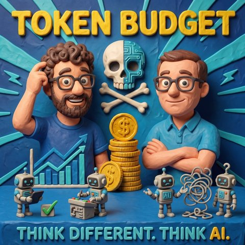

Token Budget
Read in EnglishThemen Modelle und AnbieterSoftwareentwicklungInterfaces und Interaktion
33 Sekunden zur Folge, bevor du liest.
Worum es geht
Abos, API, Budgets und ein Agent auf dem iPhone
Wie viel darf KI kosten, und woran erkennt man, dass sich der Verbrauch lohnt? Mark und Jens sind wieder vollständig am Tisch, Jens ist nach einer Krankheit zurück. Sie sprechen darüber, wie schnell Abo-Kontingente aufgebraucht sind, warum der Umstieg auf die API-Abrechnung teuer werden kann und weshalb der Verbrauch allein noch nichts über die Qualität eines Ergebnisses sagt.
Ein Thema ist der Begriff Token Maximizing, mit dem Entwickler am Verbrauch gemessen wurden, und das Wechseln zwischen mehreren Abos, sobald eines leer ist. Berichten zufolge haben manche Konzerne die Tagesbudgets für ihre Entwickler gesenkt. Ist ein Token teurer geworden, oder leisten die Modelle schlicht mehr? Welche Aufgabe braucht wirklich das größte Modell? Schnelle Varianten kosten mehr, und nur weil einem ein Ferrari in die Garage gestellt wird, fährt man nicht effizient.
Der zweite Teil dreht sich um Apple. Mark hat auf seinem iPhone einen eigenen Agenten namens Hermes gebaut, mit einem notizbuchartigen Interface statt eines Chatfensters, Morgenbriefings aus Kalender und Mails und einer Frage an Apples Private Cloud Compute: Wie weit trägt der Datenschutz? Ob die kostenlosen Kontingente bleiben, ist offen.
Transkript
00:00:00Willkommen bei Think Different. Think AI., dem Podcast von Mark und Jens.
00:00:07Zwei technologieverliebte Köpfe, die nicht nur über künstliche Intelligenz reden, sondern sie leben.
00:00:14Hier gibt's klare Einordnungen, echte Praxiseinblicke und einen frischen Blick auf das, was möglich ist.
00:00:20Verständlich, kritisch und immer mit einem Augenzwinker.
00:00:24KI zum Nachdenken, zum Schmunzeln und vor allem zum Mitreden.
00:00:33Herzlich willkommen bei Think Different. Think AI.
00:00:36Die dunkle Seite der Macht ist wieder da.
00:00:39Der Jens ist auferstanden von den Kranken.
00:00:42Und ich weiß nicht, ob ihr es kennt.
00:00:44Also erstmal, Jens, schön, dass du wieder da bist.
00:00:46Ich weiß nicht, ob ihr es kennt.
00:00:49Aber Wissenschaftler haben herausgefunden,
00:00:52wie der berühmt-berüchtigte Männerschnuppen aussieht.
00:00:55Sie haben das dazu verantwortliche Virus
00:00:58und das Mikroskop geparkt.
00:01:00Und es sieht aus wie der Todesstern.
00:01:02An der Seite, schön, dass du wieder da bist und schön, dass du nicht zerfetzt wurdest.
00:01:08Ein Buch, die Tode stellen, da hab ich immer so... Aber du redest ganz normal, du hast kein Schnaufen und kein Rauchen.
00:01:14Also von der Seite muss ich dich auch nicht Darf-Jens nennen. Sehr schön, freut mich.
00:01:19Jürgen Paderan, die geht es dir. Und gleich mal die kritische Frage, die bessere Hälfte hört nicht zu.
00:01:25Was gibts denn nur so für Token aus? Oh, okay. Also erstmal ein Hoch auf die
00:01:31Wissenschaft, dass für diese sensationale Bahndrechenentdeckung, die da gemacht worden ist,
00:01:35was ich für Token ausgebe. Also, jetzt im rein privaten Umfeld würde ich sagen, ist es mit
00:01:45Video, GCPT, ein bisschen Max bei Claude. Naja, ich würde so in der Range auf 100-200 Dollar
00:01:59im Monat mal. Du hast jetzt einen Monat gesagt. Ich hatte kurz Angst, weil ich hätte sonst fragen
00:02:05müssen, Stunde, Tag, Woche, Quartal. Ja, man weiß das nicht. Ich hatte letztens, Grüße gehen
00:02:12raus, ich möchte keinen Namen nennen, für jemanden, der gesagt hat, du, also ganz ehrlich,
00:02:15mit dem 20, ich glaube, er hat das 20-Dings-Abo, also irgendwas Kleines, ja. Und das wird
00:02:21völlig reichen. Und ich sitze dann da und denke so, wie kann denn das sein? Also es
00:02:25gab meine Zeit, muss ich mal sagen, den Contact lassen wir mal im Raum stehen. Da hatte ich mal
00:02:31Urlaub und ich habe im Urlaub auch keinen genutzt und es wurde halt vierstellig. Ja, also in der Urlaub
00:02:39waren zwei Wochen. Naja, so ist das halt, ja. Es gab aber eine Möglichkeit, das abzurechnen.
00:02:45Was an der Stelle vielleicht zu erwähnen ist, ich finde, es ist ja so ein, wie soll ich mich
00:02:50ausdrucken, eben wie du triffst. Viel ausgeben heißt ja nicht automatisch
00:02:55verschwenderisch sein, viel ausgeben heißt aber nicht auch nicht automatisch
00:02:59profi sein. Das ist ja doch schon durchaus ein sehr schmaler Grad, durch
00:03:02dem man sich da bewegt, wenn man, ich sage jetzt mal, die Maschinen zum
00:03:07Klünen bringt. Ich hatte letztens die Chance, mal das vergleist, und zwar man
00:03:12kennt das ja, es gibt ja Abos und man hat ja mal davon gehört, dass
00:03:15Abos subventioniert sind. Ich durfte letztens mal testen, wie das so ist,
00:03:20mit Subventionierung. Das heißt, ich habe den ganzen lieben langen Tag an meinen Sachen da gearbeitet
00:03:32und habe versucht, dem Codieren nachzukommen. Und irgendwann waren die Token an. Also die Token
00:03:40aus dem Abo. Und nachdem die Token aus dem Abo alle waren, bin ich umgestiegen auf nicht Abo-Use,
00:03:46sondern Pay-Per-Use, also AP-Token-Call mäßig. Und ich musste dann feststellen, dass ich an
00:03:55diesem einen Tag knapp dreistellig geblieben bin. Knapp dreistellig. Dann habe ich mir kurz
00:04:01überlegt, so Token-Appos lohnen sich, rein monetär, weil ich habe meine Arbeitsweise nicht
00:04:07geändert. Ich gebe zu, Chef stößt zu, war dienstlich, die Grüße gehen raus. Und dann
00:04:12Dann sitzt du da und denkst, okay, warte mal, du hast das Abo, das Abo ging rum, Arbeit
00:04:16hinterlegen ist nicht, du hast viele Tokens verbraucht, weil du viele Sachen hast machen
00:04:20lassen, ich lass viele Superagenten dann starten und die arbeiten, umgeben sich gegenseitig
00:04:23die Arbeit.
00:04:24Und ja, ich wechsle dann schon zwischen Sonne und Opus und so'n Kram hin und her,
00:04:28aber es hat einfach viel passiert, ne?
00:04:30So.
00:04:31Und dann war halt rum und trotzdem muss die Arbeit getan werden, also API-Base.
00:04:34Und dann denkst du dir so, okay, wenn du jetzt an dem Tag mehr ausgibst, als
00:04:38dass das Abo im Monat kostet. Ich finde den Fehler, weil dann kann mir keiner erklären,
00:04:45dass API Usage, dass die Abo-Modelle sich für die ganzen Anbieter rechnen. Und das
00:04:50wird ja dann spannend, wenn die später mal an die Börse gehen, weil dann bin ich nicht
00:04:54der Meinung, dass die mehr jedem noch so dem goldenen Löffel die Tokens quasi zuführen
00:05:00subventioniert. Meine Meinung.
00:05:02Ja, guter Punkt. Werden wir mal abwarten, was da passiert. Ich würde jetzt auch nochmal
00:05:05da so ein bisschen sagen, wie ich es vorhin genannt habe, die ist dann bei mir
00:05:09häufig auf Abo bezogen. Ich hole dann mal Tokens nach, also wahrscheinlich verbrenne
00:05:13ich auch mehr Tokens, als ich mit diesen Abogebühren, die ich habe
00:05:16eigentlich bezahle. Weil ich kann erst noch mal ganz kurz, ich hatte ja auch so in einem
00:05:19Umfeld noch mal ein Video produzieren lassen, jetzt verkürzen. Das hat dann so
00:05:23richtig schnell reingehauen. Wenn ich da so zweieinhalb Minuten einigermaßen
00:05:27professionell hinhauen möchte, dann sind das durchaus mal noch mal 200
00:05:31$200 Tokens extra gewesen, die ich an einem Abend so verbrannt habe. Aber auch, weil ich mich dann
00:05:37reduziert habe und es dann hinterher, weil es dann nur Vorführeffekte waren, vollkommen okay war,
00:05:42dann hätte man es jetzt noch auf eine richtig professionelle Qualität holen müssen, dann
00:05:46wären da wahrscheinlich noch ein bisschen mehr runtergegangen. Aber, auf der anderen Seite,
00:05:50immer noch günstiger, als wenn ich das den klassischen Weg gemacht hätte, ob ich jetzt
00:05:55jemand beauftragt hätte oder ob ich im Prinzip selber die Zeit investiert hätte, das zu
00:06:00produzieren. Das darf man ja nie vergessen, weil die ganzen token Themen, die wir da so haben,
00:06:03auf der anderen Seite kommt ja auch abseits des RL-Slops und der ganze Quatsch, der da rumgeschickt
00:06:10wird und Texte, die... Oh, ein Katzenvideo. Solche Sachen ist natürlich Quatsch zu machen und da
00:06:16reinzurechnen, weil wenn wir jetzt mal von produktiver Arbeit reden, dann ist es natürlich
00:06:19so, dass man sagen muss, ja, wenn es dann auch ein produktives Ergebnis produziert,
00:06:23dann ist das so als Trophitum abgelegt. Ich würde sagen, wichtig ist es so,
00:06:27so ein produktives Item ist, was hinterher auskommt, was genutzt werden kann, dann muss
00:06:33man natürlich die totalen Kosten sehen. Wenn man vielleicht früher erst mal ein Briefing
00:06:37Karte hin und her gefahren ist, zu einem Amateur gefahren ist, wenn man so ein Video
00:06:41abgibt.
00:06:42Preisekosten.
00:06:43Preisekosten.
00:06:44Setze, Stunden setze.
00:06:45Trotzdem laufen da ja auch Rechner.
00:06:46Genau. Selbst da laufen dann auch Rechner, die was rendern müssen, 3D-Design rendern
00:06:49müssen, irgendwas anderes. Also da sind natürlich Sachen, die jetzt einfach deutlich
00:06:52schneller gehen. Wir hatten es ja auch häufig schon mal in den Folgendauern geredet,
00:06:55Wenn man jetzt nach vorne guckt und da vielleicht auch viele Sachen entweder gar nicht mehr in der Cloud passieren, sondern lokal auf irgendwelchen Servern,
00:07:01dann ist es ja auch im Prinzip eine andere Thematik, wo ich sage, okay, muss ja auch nicht alles in Real-Time sein,
00:07:05muss ja nicht alles irgendwie jetzt sofort morgen sein, also kann auch mal ein bisschen langsamer berechnet werden.
00:07:10Und dann ist vielleicht dieses Thema der, ja, das sind so wahnsinnig viele Tokens, die da verbrannt werden,
00:07:18wenn man das mal unter dem Aspekt sieht, ohne dass ich das jetzt durchrechnen könnte,
00:07:22Das mag jemand anders gerne machen. Aus dem Bauch heraus, würde ich sagen, ist das
00:07:26vielleicht gar nicht so eine krasse Plus-Minus-Null-Rechnung, die dann da
00:07:30rauskommen würde. Sogar eher vielleicht positiver für das Thema KI-Einsatz an
00:07:35der Heimatlandstelle. Und man sollte das auch vielleicht mal aus dem Licht
00:07:38heraus sehen. Vielleicht noch was aus eigener Erfahrung, jetzt wo ich jetzt
00:07:42schon über Tokenkosten gesprochen habe. Ich hatte letztens die Chance, das
00:07:47große OPUS, nicht OPUS, das TGPT-Modell mit der Möglichkeit des
00:07:53Superspeeds zu benutzen. Und das war sehr faszinierend, weil a. er wurde mit nicht
00:08:00fertig vor Verbrauch der Tokens und b. Verbrauch der Tokens war nach fünf
00:08:04Stunden. Nach fünf Stunden hat er das 500er Abo zerfräst, da niedergelegt.
00:08:11Also er war schnell. Gut, er hatte auch ganz viele Projekte, an denen er
00:08:15er parallel arbeitete. Er hat keins richtig fertig gekriegt und ich muss mich
00:08:20dann so von Woche zu Woche hangeln und da habe ich mir auch gedacht, dann nützt
00:08:23dir dieser Turbo Speed auch nichts. Wenn du, ich sage jetzt mal, nach fünf, sechs
00:08:27Stunden fertig bist, hätte er auch die Woche überrechnen können, dann wäre die
00:08:30Performance eigentlich auch egal gewesen. Ja, dann wäre der vielleicht sogar noch
00:08:33im Gegenteil ein bisschen weiter gekommen, weil dieser Turbo Speed kostet
00:08:38ja im Verhältnis auch mehr. Von der Seite ist jetzt mein großer Vorsatz,
00:08:42wenn jetzt am Mittwoch wieder Tokenacrescent für mich ist, dass ich eben dann wieder sage,
00:08:46ach komm, lass dir Zeit, weil dann bist du wenigstens durchgängig ein bisschen beschäftigt und das
00:08:51ist dann mein Beitrag zur Tokenkostenoptimierung. Grüße gehen raus. Ja, apropos Tokenkostenoptimierung,
00:09:00oh oh, also die Woche, hier Anfang November 2026, 2026, auch wieder so ein Jahr. Was
00:09:10weil die sich alles erlebt haben. Da haben wir glaube ich das Wort Token Maximizing ganz früh
00:09:15am Anfang des Jahres gelernt oder lernen dürfen. Magst du es kurz erklären? Ja, da ging es um das
00:09:22Thema, eigentlich war kein Mensch oder vor allem kein Programmierer in den Augen seines
00:09:26Arbeitgebers etwas wert, wenn er nicht Millionen von Tokens in der Sekunde verwandt hat. Also so
00:09:31ein bisschen das Uberspitzen. Das war aber im Prinzip das. Accepted. Genau. Diese Marketing
00:09:38Story auch so ein bisschen von den großen Anbietern, die gesagt haben, oh, ihr müsst
00:09:41eure Entwickler da richtig die Token raushauen lassen, wenn das Entwickler nicht irgendwie
00:09:46wahnsinnige Token kostenproduziert, dann ist er eigentlich gar kein richtiger Entwickler
00:09:49mehr. In all diesen Stierblüten, da hat sich dann quasi dieser Begriff des Token
00:09:56maximizers quasi ausgedrückt. Ja, also wir waren davor im Prinzip unsere Arbeit
00:10:04durch die Anzahl der Tokens zu messen, die man so für seine Arbeit benutzt.
00:10:09Ich würde da gerne noch einen draufsatteln.
00:10:11Zumindest habe ich den Begriff Token-Maximizing so mal gehört, dass du mehrere Abos auch
00:10:18hast und dass wenn ein Abo leer ist, du dich quasi beim nächsten anmeldest, den Login
00:10:24quasi wechselst, was natürlich den Charme hat, wenn du zum Beispiel Cloud Code bist
00:10:29und du hättest mehrere Abos und du machst lock-off, lock-on, lock-off, lock-on, lock-off,
00:10:32dann hast du mehrere Male dieses 200er oder was auch immer was Abo und kannst quasi weiter arbeiten
00:10:40in der Hoffnung, dass wenn du mit dem Letzten durch bist, quasi das erste wieder anfängt und ich
00:10:45kenne sogar jemanden, der hat fünf, ich bin es wirklich nicht, ist nicht so wie Rita, was kosten
00:10:50die Kondome? Also nein, wirklich fünf große Abo's bei Anthropic und dem reicht das die Woche
00:10:57über nicht ist auch krass. Ja, das ist ein bisschen crazy. Also da gab es natürlich dann
00:11:02auch Optimierungsthemen, so wie du es gesagt hast. Wir kennen ja jetzt alles dieses Wochenbudget und
00:11:06sowas. Und dann fing man eben auch an zu gucken, okay, kann ich vielleicht mein Harnis so bauen,
00:11:11dass er sehr geschickt quasi den Code oder was auch immer produzieren soll per KI oder die
00:11:18wahnsinnig große Research-Aufgabe, die man gegeben hat, so verteilt, dass man im Prinzip
00:11:22Dann quasi diese Budgets, die man überall hatte, sauber auslösen.
00:11:25So, also waren also kurz davor zu sagen, wir werden eigentlich auch eine, ja, die,
00:11:33jetzt fällt mir das Sprichwort nicht ein, mit der Goldelse, ich bin ja immer so,
00:11:37Sprichwort, das bin ich nicht gut, ne?
00:11:39Geht also eher darum zu sagen, wir sind im Prinzip die Produzenten gewesen
00:11:43für diesen Goldrausch bei den Großen an.
00:11:46Goldrausch, weißt du woran ich dann denke?
00:11:49Du kannst das Wort KI aussprechen und dann stell dir vor bei Goldrausch, jetzt bitte nicht
00:11:53falsch verstehen, aber da fällt mir ein, so ein Cowboy, kaum noch Zähne im Mund, aber
00:11:58ein Lächeln, weil er ein Goldnacket aus dem Fluss geholt hat, so wie ja und so im Vorwärts
00:12:03und das ist so ein bisschen dieses KI Zeug.
00:12:05Ja und wir sind aber auch dann im Prinzip derjenige, der eben das befeuern sollte
00:12:10noch zusätzlich.
00:12:11Also wenn wir das nicht befeuern, dann sind wir eigentlich selber schuld quasi,
00:12:15weil wir da nichts mehr wert sind und das ist natürlich eine sehr, sehr feine
00:12:17Story da für die großen Anbieter gewesen, die sich da opferbaut haben.
00:12:20Aber es hat sich schon ein bisschen so im Sommer langsam umgekehrt, habe ich das Gefühl gehabt.
00:12:28Da wurde das so ein bisschen kritischer beäugt.
00:12:30Da hat man auch gesagt, ey, diese ganzen Token einfach rausschießen ist vielleicht
00:12:33auch keine gute Idee.
00:12:34Auch umwelttechnisch vielleicht nicht der Schlauste, das muss man jetzt immer sehen.
00:12:38Diese ganz großen KI-Zentren, die in Amerika da tatsächlich so neben Wohngebiete
00:12:42gebaut werden, das ist wirklich keine feine Sache, was die machen.
00:12:44Nee, wurden.
00:12:45die Midterms. Da sind ja ganz viele Staaten jetzt auf einmal Richtung demokratisch
00:12:49gewandert. Also nicht, dass die anderen nicht demokratisch sind, aber die
00:12:52demokratische Partei. Und da sind ja, soweit ich das mitgenommen habe, auch im
00:12:56Rahmen der Wahl über ganz viele Rechenzentrumsprojekte abgestimmt
00:13:00worden in Form von, was die Bürger davon halten. Und ich könnte mir schon
00:13:04vorstellen, also die Demokraten sind ja nicht wirtschaftsfeindlich oder
00:13:08irgendwas, ja, aber ich könnte mir vorstellen, dass einfach jetzt mehr
00:13:11Beteiligung dahingehend drin ist, dass man eben nicht sagt, du pass mal
00:13:15Du kriegst jetzt in den Rechenzentrum in die Nachbarschaft gestellt.
00:13:17Wir parken die Gas-Turbinen auf LKWs, weil dann zählen sie nicht als Gaskraftwerk,
00:13:21sondern als irgendwas anderes. Dann ist das gar kein Problem.
00:13:24Ist mir doch egal, was mit Wasser und Strom ist.
00:13:26Und es arbeiten Menschen zu, keine Ahnung, was für Löhnen.
00:13:29Nach dem Motto, du kriegst ja keinen Job und trotzdem stinkt alles.
00:13:32Das an der Stelle sicherlich Optimierungen jetzt stattfinden.
00:13:35Und ich fand es auch total spannend, dass Sam Altman,
00:13:37der uns vor ein paar Tagen noch erzählt hat, wie schlimm es ist,
00:13:40dass Menschen RAM in ihren privaten Rechtern haben.
00:13:43Man könnte sie doch viel mehr bei sich brauchen.
00:13:45dass die jetzt auch nicht mehr von KI-Rechenzentren sprechen, sondern von Superintelligence, Computer Campus, blablabla und das Andersframen,
00:13:55weil dann wäre man ja auch nicht betroffen von diesem ganzen Rechenzentrumszeug und das spielt auch so ein bisschen rein, wo du, glaube ich, nachher noch auch noch hin willst in dieses Thema.
00:14:03Leute, geht vielleicht weniger Tugend aus. Wir machen da vielleicht mal eine Grenze drauf nach dem Motto, vielleicht brauchen wir in Zukunft die Rechenkapazität für was anderes.
00:14:13wer weiß, wo da die Reise hingeht.
00:14:15Ja, definitiv. Und das ist auch so ein bisschen das, was jetzt in den ersten November-Tagen dieses Jahres dann aufgetaucht ist.
00:14:22Da gab es jetzt Meldungen darüber, dass größere Firmen, ich meine, es ist Apple, Tesla, Microsoft und Co.
00:14:28durchaus ihre Budgets für ihre Entwickler, non-technical persons, diese haben, teilweise drastisch reduziert.
00:14:39Na ja, dann irgendwie von 300 Dollar bei den Entwicklern runter auf 200 Dollar am Tag.
00:14:44Also noch eine ganz andere Summe, als wir gerade erwischen haben.
00:14:46Am Tag?
00:14:47Am Tag, ja.
00:14:48Das ist immer noch...
00:14:49Moment mal, Stoff für Entwickler oder Menschen der Wissensarbeit?
00:14:52So weit habe ich jetzt nicht nachgelegt.
00:14:53Also, das waren Entwickler.
00:14:54Die Entwickler.
00:14:55Nee, das waren schon Entwickler.
00:14:56Okay.
00:14:57Ja, schon, nee.
00:14:58Ja gut, für Entwickler verstanden.
00:14:59Weil Wissensarbeiter, glaube ich, verbrennen nicht.
00:15:01Ja, die Kinder, die sind irgendwie runter auf 25 Dollar oder so was, ne?
00:15:04Aber das ist jetzt auch egal.
00:15:06Das sind im Prinzip die einzelnen Zahlen. Ich hatte irgendwas von Tesla noch gelesen,
00:15:10von 200 Dollar pro Woche für manche Abteilung, über 1.500 Dollar für Coding-Tools im Monat oder so was.
00:15:19Da ist im Prinzip so ein Deckel eingeführt. Aber jetzt gerne du erst mal.
00:15:24Ich habe mich gerade gefragt, wenn es ja im Ort mit dieser Geschichte mit dem Ram sagt,
00:15:28und ich habe irgendwo, ich weiß nicht, ob es Fakten oder Gerüchte ist,
00:15:30da frame ich es auch gar nicht erst, gehört, dass auch Microsoft irgendwie so dran ist,
00:15:34Danken zu machen, so wie SETI at Home, dass du Grafikkarten, CPU und RAM-Event verfügbar
00:15:40stellst.
00:15:41Ich habe mich gerade gefragt, ob Elon irgendwann auf die Idee kommt, die Rechenkapazität
00:15:45seiner Teslas, wenn sie parken, zu nutzen, so nach dem Motto, damit er für sie rechnen
00:15:49kann.
00:15:50Das fände ich total lustig.
00:15:51Sollte es so sein, Elon?
00:15:52Meine Idee?
00:15:53Ich möchte beteiligt werden.
00:15:54Ja, vielleicht hat er es schon gehabt und es passiert schon wieder auch ohne, dass
00:15:58du es weißt.
00:15:59Ich versuche irgendwie reich zu werden.
00:16:01Es klappt nicht.
00:16:02Es klappt nicht.
00:16:03Ich bin auch schon verkeilt.
00:16:04Der Bitcoin bin ich ausgestiegen bei 60 Euro.
00:16:07Mit wie vielen?
00:16:10Zwei.
00:16:11Zwei.
00:16:12Na gut.
00:16:13Ja gut.
00:16:14Aber zwei heute?
00:16:15Das ist schon schön gewesen.
00:16:16Ja, ein geiler Urlaub und mehr.
00:16:18Aber gut.
00:16:19Wir sind ja bei Think Different. Think AI. und nicht Think Podcast, Think verpasste Chancen
00:16:24oder sonst was.
00:16:25Genau.
00:16:26Mit Herz, sag ich mal.
00:16:27Um da jetzt nicht weiter rum zu wühlen in der Wunde, also wir haben im Prinzip
00:16:32jetzt eine Phase, wo wir über Budgetierung von Tokens plötzlich reden und das ist so
00:16:39ein Ding, wo ich gerne mal mit dir mich darüber austauschen würde, weil ich glaube, was da
00:16:43jetzt passiert, ist klar auch in Hinblick auf diese Börsengänge, was du gerade angedeutet
00:16:49hast, wenn die Börsengänge passieren, ich glaube OpenAI überholt da auch glaube
00:16:53ich noch Anthropic, wegen der Geschwindigkeit, ich glaube erst war es Anthropic letzte
00:16:56Woche oder vorletzte Woche, die angekündigt haben, sie drehen dann bald an die Börse
00:17:00und jetzt habe ich von OpenAI gehört, dass wir jetzt auch noch schneller an die Börse gehen wollen.
00:17:04Also da will einer den anderen schlagen. Da müssen wir mal gucken.
00:17:07Du hattest vorhin angedeutet, dass durchaus da in dem Zuge vielleicht das Thema Geschäftsmodell
00:17:11nochmal genau darlegen und anschauen auch dazu führen könnte, dass jedenfalls die Abos
00:17:17vielleicht gar nicht mehr so ganz günstig sein werden, Tokenkosten nochmal exkludieren könnten.
00:17:22Wer weiß? Und ich habe das Gefühl, dass die großen Firmen auf der Welt jetzt sagen,
00:17:27nachdem wir so eine Phase hatten, ach komm, alle müssen mal mit KI rumprobieren dürfen,
00:17:32kostet ja nix, dass man jetzt so überlegt, aha, vielleicht ist bei dem einen oder anderen
00:17:37doch vielleicht so eine kleine Grenze gar nicht so schlecht.
00:17:41Ich würde gerne an einen Punkt einhaken.
00:17:44Ja.
00:17:45Ich bin der Meinung, dass wir diese Abo-Preise so sicherlich, dass das eine Veränderung
00:17:50erfährt.
00:17:51Aber ich finde, dass das Framing, Token werden teurer, das finde ich nicht ganz
00:17:56richtig, weil wenn du vergleichst, was du an Leistung kriegst, ist das ja durchaus noch mal was
00:18:02anderes. Also nur, weil du jetzt sagst, okay, keine Ahnung, das Appomodell kostet mehr und es werden
00:18:11mehr Tokens verbraucht. Ich finde auch den Begriff des Verbrennens ist halt lustig, aber es
00:18:16wird ja nichts verbrannt. Es wird halt in Wärme umgewandelt, weil der Computer läuft, aber egal, ich will was anderes
00:18:21wenn man es vergleichen mit was habe ich denn vor einem jahr für mein tgbt abo
00:18:27bekommen da hat war das abo das kleine abo genauso teuer wie heute aber die
00:18:31leistung die ich heute kriege für das kleine abo ist exorbitant mehr dass ich
00:18:36einen höheren konsum habe einen höheren verbrauch habe liegt ja nicht
00:18:39da dran dass die tokens per se teurer wurden
00:18:42das liegt einfach daran dass ich die großen modelle noch zu mehr sachen
00:18:45hinreiße und dass ich vielleicht sage naja gut kommt ich bereite mal ein
00:18:50Prototypen vor. Wir diskutieren über einen fertigen Prototypen, wo wir früher
00:18:53gesagt haben, zähl Menschen ab in einen Zug, ab wohin und ab. Wir reden mal drüber,
00:18:58zu sagen, okay gut, ich bringe mal morgen was mit und wir reden darüber, was wir
00:19:02da gebaut haben, was wir identifiziert haben, was wir recherchiert haben und so
00:19:05weiter. Das heißt, nur weil ich das System mehr nutze und deswegen mehr
00:19:09Geld ausgebe, heißt ja nicht, dass die Token im Verhältnis, was kriege ich
00:19:14für die Token, teurer geworden sind. Und wenn ich dann schaue, was du dann
00:19:17mit den Open-Source-Modellen kriegst. Ich meine, da heißt es immer, ist das so gut
00:19:20wie das aktuelle Frontier? Nein oder ja oder wie auch immer, aber ist es so gut wie das
00:19:27Frontier, was wir vor einem Jahr geil fanden? Da sind die meisten besser. Und wenn ich mir
00:19:34anschaue, also ich zum Beispiel arbeite total gerne, ich möchte jetzt das Lachen
00:19:39der unserer Hörer mit Sone und mit Heiko. Heiko 5.5 ist richtig gut für Standardkram
00:19:46um Kosten. Eigentlich ist nichts vermessen, aber ich finde es total günstig. Für das,
00:19:53was es mir tut. Keine Kuhfrühe hätte sie nicht nehmen können. Das ist so wie,
00:19:57willst nicht würfeln. Okay, okay. Das ist jetzt nochmal eine ganz andere Story,
00:20:02die wir da aufmachen. Das bringt mich zu dem Thema, dass ich auch immer noch mal einen
00:20:06kleinen Artikel zu schreiben wollte. Die Schwierigkeit für den Normalanwender,
00:20:12überhaupt erst mal diese Differenzierung zu machen. Selbst glaube ich für den
00:20:16einen oder anderen Programmierer ist es gar nicht so einfach, der sich intensiv
00:20:19mit den Themen beschäftigt, weil du musst ja auch da wieder fast deinen
00:20:23eigenen Benchmark machen für deine spezielle Aufgabe, ob du jetzt das eine
00:20:27Modell oder das andere Modell nimmst. Wir haben es ja nur vor angedeutet, mit welcher
00:20:31Geschwindigkeit ist das jetzt eine wichtige Aufgabe, die wichtigste Aufgabe der
00:20:35Welt, die du da lösen möchtest oder einfach nur ein taffes Problem, was du
00:20:39hast. Das ist natürlich total schwierig für uns Menschen einzustuppen, was ist
00:20:42das jetzt eigentlich ist, das im Prinzip, weil ich gleich zu meinem Chef muss und dem eben was
00:20:46vorstellen muss, ist es deshalb das taffste Problem der Welt oder ist es das taffste Problem,
00:20:50weil es jedenfalls irgendwie... Kommt auf deinen Chef dran. Auch hier wieder, grüße Gene raus.
00:20:54Kann auch, kann auch was anderes sein, weil ich irgendwie, keine Ahnung, die Regeln des
00:21:00Kindergartens verstehen will oder nachgucken muss, ob der Flughafen, ob der Flughafen...
00:21:05Ich regne das Kindergarten. Ja, ich sag immer, ich fiege gerade nichts aus. Ja oder was ist denn
00:21:10einen Carry-On-Back und was nicht. Und so größer hat man, sollte man lieber Google
00:21:14und nicht die KI-Modelle fragen. Das ist ja auch alles viel. Was ich sagen möchte
00:21:17nur ist, dass wir glaube ich auch da ein Thema haben werden in Zukunft, dass man
00:21:23die, also wenn die Anbieter es nicht machen, dass man inter sich deutlich
00:21:28klarer werden sollte und seinen Leuten auch helfen sollte. Wir hatten ja auch
00:21:31vor kurzem eine Folge bezüglich der KI-Transformation, dass man da deutlich
00:21:36klarer machen sollte, wofür sind die Modelle denn eigentlich da. Also muss
00:21:39ich zum Beispiel für das Aufbereiten einer Powerpoint, wenn das noch nötig ist in meinem
00:21:45Arbeitsumfeld, muss ich unbedingt das aktuellste Frontier-Modell dafür benutzen oder reicht
00:21:50nicht auch ein schwächlenes dann zum Beispiel lokal laufendes Modell, was die Aufgabe bis
00:21:55morgen fertig hat. Das heißt, das ist im Prinzip natürlich eine total spannende Frage
00:22:00in dieser Phase, wo anscheinend mehr auch budgetiert wird. Ich glaube, das Budgetieren
00:22:06hat auch was damit zu tun, dass man erkennt, dass es auch nicht schlau ist, jedem den
00:22:13Ferrari an KI mit allen Möglichkeiten zur Verfügung zu stellen, der in alle Richtungen fahren
00:22:18kann, am besten noch schlimmen kann oder vielleicht nicht noch zum Mund bringen kann,
00:22:21wenn die Aufgabe einer Einzelperson vielleicht etwas anderes ist, der nicht unbedingt 20
00:22:26KI-Agenten parallel anstoßen muss, um eine geile Programmierleistung zu machen oder
00:22:30ein sehr komplexes mathematisches Problem zu lösen oder irgendwas anderes. Ich glaube,
00:22:34kommen langsam in diese Phase, wo wir da differenzieren können, weil auch die
00:22:38günstigen Modelle schon extrem gut sind. Weißt du, das ist ja auch so ein Ding, das
00:22:41hast du ja auch gerade gesagt. Also das ist ja auch jetzt nicht mehr so vor ein
00:22:44oder zwei Jahren. Also mit den Modellen, die wir dieses Jahr bekommen
00:22:47haben, die sind immer noch alle so geil. Du kannst die Modelle vom Anfang
00:22:51des Jahres nutzen für so viele Sachen trotzdem und natürlich sind die
00:22:53noch mal geiler und können noch andere Sachen machen. Aber für viele,
00:22:56viele Standardanliegen sind die Modelle auch aus dem letzten Jahr schon
00:23:01wahrscheinlich bei 90 Prozent der Fälle vollkommen ausreichend, die wir eigentlich haben. Und ich glaube, da haben wir uns mal so ein bisschen gespürt verentwickelt.
00:23:07Ich möchte vielleicht, bevor wir noch, wir haben ja noch ein Thema, das wir anschneiden wollen, bevor wir da übergehen, zum Thema
00:23:14Tokenverbrauch und Kosten, damit noch mal einen Satz bringen. Ich habe ja eingeleitet mit
00:23:19Token,
00:23:20welchen Aufwand man da oder ich teilweise
00:23:23verursache. Jetzt wird vielleicht der ein oder andere denken, man, was für ein verspenderischer Kram.
00:23:27Man muss dazusagen, natürlich verwendet man auch solche Sachen wie hier Ponytail, also
00:23:33dieses beste Code, der ist der, der nicht geschrieben wurde. Also Fähigkeit, die dem
00:23:38Agenten beibringen, sparsam zu sein, Sachen wiederverwendbar zu machen,
00:23:44schlicht und ergreifend auch damit Token zu sparen. Und das Ding wirkt ja auch damit,
00:23:48dass es irgendwie 50-60 Prozent Tokenreduktion erreicht, weil es halt auch
00:23:53Stichnagreifen-Code-Reduktion machen. Das sollte man an der Stelle machen, was natürlich auch
00:23:57ein Umkehrschluss heißt, wenn du dem Ding sagst, okay, löse diese Aufgabe und starte dafür. 50
00:24:03Supergenden, größte Effort-Stufe, größtes Modell und wiederhole das Ganze 20-mal,
00:24:12bis wirklich keine Widersprüche mehr da sind und am Ende vom Tag sollte da eigentlich nur
00:24:17zwei Zahlen addieren. Auch das würde natürlich Tokenkosten nach oben treiben, das heißt
00:24:22Nur, und das fiel mir ein, als du den Ferrari erwähntest, nur weil mir jemand den Ferrari
00:24:27in die Garage stellt, heißt das nicht, dass ich ihn effizient fahre, dass ich ihn nicht
00:24:31kaputtfahre, dass ich ihn überhaupt beherrsche.
00:24:34Ich erinnere mich auch hier größer an meinen alten Chef, der mich zum ersten Mal in einen
00:24:38Mercedes gesetzt hat und gesagt hat, kannst du mir den gerade von der Werkstatt,
00:24:41vom Hof holen, weil der Hof wird abgesperrt, ich bin dahin, hab noch nie was von einer
00:24:46Fußhandbremse gehört und habe den Beweis angetreten, dass Motorleistung auch Fußhandbremsen
00:24:52lösen können. Es hat gequält, es hat gequetscht, es hat geschrien. Alle haben aus dem Fenster
00:24:56geguckt. Ich habe das Auto vom Hof bekommen. War das effizient? Nein. Ja, also von der Seite
00:25:02gilt auch, wie man mit den Systemen umgeht und an dieser Stelle alle Höhrenden dazu
00:25:08beglückwünschen, dass sie nicht das Video von uns sehen, weil mich Jens in einer derartigen,
00:25:12das hat er jetzt nicht wirklich gesagt, Gesicht in die Kantschnauze. Ja, also von der Seite,
00:25:19vielleicht sollten wir doch irgendwann noch mal, wir wollten ja irgendwie auch noch mal live aufreden.
00:25:23Ja, ich habe auch gesehen, dass du im fremden KI-Podcast Gast warst.
00:25:26Also nicht Gast, sondern Gast, also Gast-Gast, also Publikums-Gast.
00:25:30Wir müssten das mit der Bühne schaffen, aber damit würde ich, das wäre mein Schlussplädoyer.
00:25:36Passt auf, wie ihr eure Token ausgibt und nur weil einer sagt, er hat viel ausgegeben oder nicht,
00:25:40ist das noch lange keine Aussage über Quantität und Qualität.
00:25:43Da muss man dann doch schon mal gucken, wie gehen die Menschen damit um
00:25:47und damit will ich weder meins schönreden, was mir zu wem ich berichtet hab oder nicht,
00:25:51einfach nur Augen auf beim Tokenkauf. Also ja, dann darfst du mir auch noch einen Satz sagen,
00:25:57es war ja auch nie die Lines of Code, die berühmten, die über Qualität eines Produktes
00:26:02dann irgendwann eine Aussage machen. Also dementsprechend, man sollte immer auf die
00:26:05richtigen KPIs gucken und im Endeffekt, ob du jetzt zigtausend Tokens ausgibst, Millionen,
00:26:12aber Trilladen. Wenn das Problem hinterher gelöst ist und besser gelöst ist, als wir das auf eine
00:26:19andere Art und Weise gelöst hätten, dann war es ja sinnvoll. Und genauso wie man sonst im privaten
00:26:25oder beruflichen Umfeld da einfach Entscheidungen fällt, ist es jetzt auch einfach wichtig da
00:26:30immer wieder zu gucken, okay, nur weil jemand viele Tokens ausgibt, heißt das nicht, dass der
00:26:35verschwenderisch ist, sondern wenn ich dann auf den Outcome schaue, den er hat, nicht nur auf
00:26:41den Outputs schaue und sehe, das hat wirtschaftlichen Erfolg, dann ist das einfach auch ein gut
00:26:46investiertes Budget für Torus gewesen in dem Fall.
00:26:50Gut investiertes Budget ist ein total tolles Zauberwort.
00:26:53Ja.
00:26:54Gut investiertes Geld.
00:26:57Ich sehe gerade, das seht ihr nicht, der Markt ist Besitzer, stolzer Besitzer eines
00:27:04Das ist das neue Club-Handy, also nicht das neue Nokia Club-Handy, sondern das neue Club-Handy.
00:27:12Nokia Communicator 2600.
00:27:14Sagt man Club-Handy eigentlich dazu? Ja, eigentlich schon. Das ist die Klasse der Club-Handys.
00:27:18Ich habe das Wort Club-Handy schon seit langem nicht mehr gehört.
00:27:22Als ich mit dem iPhone Duo zu Hause ankam, meine Tochter das sah, meinte sie höchsten Samsung.
00:27:27Das fand ich irgendwie im ersten Moment erst mal irritierend.
00:27:30aber ja, Falthandys sind jetzt irgendwie nicht so ganz apples mit je gewesen. Aber ich muss sagen,
00:27:37ich hatte schon lang nicht mehr ein Handy, das mir so viel Spaß bereitet hat. Gut,
00:27:40fairerweise, selbst wenn es nicht so wäre, müsste man das bei dem Preispunkt auch sagen,
00:27:45weil sonst müsste man ja zugeben, dass man darunter umständlich viel Geld für wenig Spaß
00:27:50ausgegeben hat. Aber ich meine es total ernst, weil dieses Gerät, also es ist wie
00:27:55so ein kleines schwarzes Büchlein, ja, es kann man sagen, alter weißer Mann, kleines
00:27:59schwarzes Büchlein. Nee, darum geht es gar nicht, weil ich, hat mir der auch noch diese
00:28:02magnetische Hülle von Apple geholt. Es ist auch das, was du drin kriegst, nämlich die
00:28:07Möglichkeit, dass du, je nachdem, was du gerade arbeitest, halt ein klein oder
00:28:11ein großen Bildschirm hast. Das wirst du sagen, okay, das habe ich bei den Samsung-Handys
00:28:14auch. Aber ich habe mich dann hingesetzt, darauf wollten wir, glaube ich, eingehen,
00:28:19Jens, und hat mir einen kleinen Harnes gebaut auf diesem Gerät.
00:28:27Gerät.
00:28:28Gerät.
00:28:29Auf das Gerät.
00:28:30Ja, das Gerät hat einen Harnes bekommen und bevor ich sage, was der Harnes alles kann,
00:28:35muss ich zu dir sagen, ich bin schwer irritiert, weil wenn mir bisher vielleicht beruflich
00:28:40gefolgt ist, wird wissen, dass ich mittlerweile was mit KI mache, aber dass ich in der
00:28:44Historie Mobile-App-Entwicklung verantwortet habe bei uns und früher habe ich immer
00:28:50gesagt, wisst ihr was Leute, wir bauen schöne Apps und wir legen sehr viel Wert
00:28:54auf gute Qualität und und und, aber unsere Kompetenz hört da auf, wo es Handy aufhört.
00:29:01Ja, das heißt, wenn du Serverinfrastruktur brauchst, gibt es andere Menschen mit der
00:29:05entsprechenden Professur. Wir gucken, dass es auf dem Handy gut läuft. Wir reden euch nicht
00:29:08rein, ihr redet uns nicht rein und dann werden wir auch alle verein, was die Lösung angeht.
00:29:12Und warum erzähle ich das? Ich habe irgendwie gemerkt, dass als ich angefangen habe meinen
00:29:19Harnes zu bauen, dann war das ja auch immer so. Du hast einen Harnes und der Harnes
00:29:22reagiert auf das, was du von ihm willst. Meistens sagt der Harnes, was kann ich
00:29:26heute für dich tun? Du schreibst in den Chat was rein und der Harnes macht das.
00:29:30Und das, was ich jetzt auf dem iPhone gebastelt habe, das geht gefühlt einen anderen Weg.
00:29:37Also da kannst du schon was reinschreiben und der macht das dann.
00:29:40Aber du kannst auch reinschreiben, mach das morgen um acht. Dann macht der
00:29:46das morgen um acht. Braucht kein Server, runtime, irgendwas. Er macht alles
00:29:51lokal und gibt dir dann morgen zum Beispiel dein Tagsbriefing oder deine KI-Recherche.
00:29:58Ich lasse mir jeden Morgen so, was ist denn an den letzten vier Stunden passiert.
00:30:02Und das sucht er sich dann alles zusammen und den jetzt einer sagt und ich muss das
00:30:07Wort sprechen, weil ich mindestens einmal in jeder Folge präge.
00:30:10Und dann bin ich hingegangen und habe denen das machen lassen.
00:30:13Wenn jetzt jemand sagt, das ist ja kein richtiger Harnes, weil du hast ja keine
00:30:15Sandbox usw.
00:30:16Das ist total lustig.
00:30:17Hat er nämlich.
00:30:18Also der HANNES, den ich da gebastelt habe, vielleicht so zwei, drei Eckdaten, der verwendet...
00:30:24Erklär ruhig nochmal Sandbox und HANNES auch nochmal.
00:30:27Also HANNES ist ja für mich, ich sag mal, die Begegnungsstätte zwischen Mensch und Maschine.
00:30:30Nämlich einerseits das Benutzerinterface, das der Mensch hat, um mit KI-Systemen zu interagieren
00:30:35und andererseits die Laufzeitumgebung, also das Programm, das mir ermöglicht, mit einem KI-Modell,
00:30:42Mithilfe von Tools, das ist dann MCP, um mithilfe von Promps und Anweisungen, das sind dann Skills, zu interagieren.
00:30:48Und diese App, diese Anwendung, die auf dem iPhone läuft, stellt halt dieses Zusammenkommen dar.
00:30:54Das heißt, es repräsentiert mir ein Interface, um mit diesem KI-Modell zu reden.
00:30:59Und das Lustige ist, dieses KI-Modell ist nicht Anthropic oder Outmai, das ist Apple Private Cloud Compute.
00:31:09Also die Modelle, die Apple bei sich trainiert, im Rechenzentrum laufen lässt,
00:31:14wo sie sagen, dass das Datenschutzniveau analog zur Verarbeitung auf dem iPhone selbst ist,
00:31:20wo sie bis zwei Millionen App-Installationen keine Token kosten wollen
00:31:24und das Ding läuft in diesem Harnes.
00:31:28Und weil du gerade eben das Thema Sandbox gebracht hast,
00:31:31Sandbox kannst du in iOS eigentlich nicht bauen,
00:31:34kleine Sekunde, kannst du in iOS nicht bauen,
00:31:36weil Apple das Ausführen von Code zur Laufzeit eigentlich verbietet.
00:31:42Und eigentlich hat mein Coding-Agent sich gedacht, da fällt mir was Schönes ein.
00:31:47Frei ausgedrückt hat er einen on-the-fly-Python-Interpreter,
00:31:51der das dann on-the-fly übersetzt in was Apple-lastiges.
00:31:54Das heißt, ich habe eine Sandbox und ich kann Skills ausführen und damit zum Beispiel auch sagen,
00:31:58recherchiere und überführe das in sehr schöne Folien,
00:32:02die ihr dann in dieser Sandbox zusammenschraubt und klickt und macht und sich Programmcode generiert
00:32:08und mir dann am Ende diese Folien gibt. Und bevor ich jetzt weiter schwärme und vielleicht
00:32:12noch zwei, drei weitere coole Features von Apple erwähne, du hast den Finger gehoben,
00:32:16du wolltest was sagen. Ja. Du wartest da, weil ich eine Nachfrage habe,
00:32:19die mir nicht ganz verstanden habe. Du wartest das kurz erwähnt mit dem 2 Millionen Apps,
00:32:25die Apple erwartet. Also ich hatte ja jemals gehört, dass im Prinzip das momentan noch
00:32:30kostenlos ist, aber ich habe jetzt die 2 Millionen Apps nicht genau verstanden.
00:32:33Dass ich mir 2 Millionen Apps runter lade oder was ist die Aussage?
00:32:36Nein, nein, nein, nein.
00:32:37Also es gibt ja verschiedene Paar Schuhe.
00:32:39Also erstens, wenn du Private Cloud Computing nutzt, dann geht das auf das Kontingent des Anwenders.
00:32:44Und der Anwender hat je nachdem, was er bei Apple mit iCloud Plus und so weiter abgeschlossen hat,
00:32:49verschiedene Sachen und da habe ich keine Umrechnungsmatriken gesehen, aber ich habe irgendwie
00:32:54in Reddit gelesen, dass je teurer dein Abo ist,
00:32:57mehr Rechenleistung von Apple quasi, geboten kriegst für Anwendungen, die du hast, die Apple
00:33:02Intelligence nutzen. Wenn ich als App-Ersteller eine App baue, dann kannst du die ja grundsätzlich
00:33:09in Store stellen oder in Test-Flight, das ist der Beta-Store von Apple, hochladen, damit andere
00:33:14Menschen die nutzen können. Und wenn zwei Millionen Menschen das herunterladen,
00:33:19dann, ab dann kostet das Geld 100.000. Das muss ich doch mal nachgucken. Ist natürlich eine
00:33:25Wichtige Null, aber beides wäre für mich, für mein kleines Spiel weit, weit, weit weg.
00:33:30Ja, ich glaube es waren 200.000. Ich muss gucken. Ich reiche es im Fusselcheck.
00:33:35Aber auf jeden Fall ist das so der Grenze für den Entwickler kostenlos.
00:33:40Wie es danach kostet, weiß man nicht. Und das, was du jetzt angedeutet hast,
00:33:44ich hatte oder im Vorgespräch oder jetzt, weiß ich gerade nicht, ja, ich werde ja
00:33:47alt, auch alt und senil. Es geht ja irgendwie durch die Presse, dass Apple
00:33:51diese Freitokens da irgendwie reduzieren würde und ich habe das so verstanden,
00:33:56dass die Möglichkeit, dass du, wenn du meine App jetzt laden würdest, weniger
00:34:02oft diesen Private Cloud Compute Kram anstoßen kannst, bevor du in eine Pause
00:34:09kommst, wie wir es auch von Anthropic und Co. kennen, wo dann halt einfach steht
00:34:12Private Cloud Compute ist gerade ausgelastet, komm doch bitte später vorbei.
00:34:15Okay, da reagiert natürlich mein UX-Herz gerade schon wieder, ne?
00:34:20Es wird nicht alles irgendwie momentan einfacher, ehrlich gesagt.
00:34:25Also selbstverständlich ist das Thema für die Anwender.
00:34:28Für das Thema werden sie gerade schon gucken, wie viel gebe ich aus?
00:34:33Läuft das Budget zu Ende? Entweder das von meiner Firma
00:34:36oder das wöchentliche Budget oder das tägliche Budget,
00:34:39das meine KI mir vorgibt in der gewissen Geschwindigkeit.
00:34:42sagst du auch noch mal, bei Apple Intelligen ist das auch noch mal ein Thema. Ich glaube, da müssen wir,
00:34:47ich will das jetzt gar nicht kritisieren, das ist alles auch ausprobieren und auch die Hersteller
00:34:50müssen da erst mal ihre Geschäftsmodelle finden und gucken, wie das funktioniert und ich glaube,
00:34:54das ist gut, dass man da jetzt auch noch rumtesten kann. Ich hoffe, das war da eine
00:34:57Lösung für Finn, weil ich glaube, das ist etwas, was echt auch kompliziert macht und dann
00:35:03hinterher vielleicht auch manchen zurückhalten wird, weil er Angst hat, vielleicht unbegründet,
00:35:08dass er irgendwie total viel Geld ausgeben muss. Das ist immer so ein bisschen, wo ich sage,
00:35:12das müssen wir alles ein bisschen einfacher gestalten. Wobei, an der Stelle möchte ich jetzt
00:35:16eine Lanze brechen, weil egal, ob ich jetzt die Null dranhänge oder nicht, 200 oder 2 Millionen,
00:35:22du kriegst, wenn du jetzt so ein Indie-Entwickler bist oder selbst wenn du dienstlich eine App
00:35:28rausbringst und hast irgendwie deine 40, 50, 60, 70, 80, 90, 100.000 Kunden und du kannst
00:35:34denen eine App zur Verfügung stellen, die KI-Funktionalität quasi einfach mitnutzt. Ist
00:35:41ist das, nicht zu fach. Und diese Grenze mit Private-Doll-Computer, da bin ich zwar auch
00:35:46schon reingeräuscht, dass er zu mir gesagt hat, du musst jetzt warten. Aber diese Geschichte,
00:35:50ich kann mir einen Harnes bauen, der im Grunde Skills benutzen kann, wie wir es von Entshopee
00:35:57kennen. Lokal auf dem Gerät, das alles vorhält und macht und tut. Und du im Grunde
00:36:03Rechercheaufträge, bereite mich auf den Tag vor, bewerte mir meinen Tag, so Knowledge
00:36:07Navigator, für den Tag hast, der Zugriff hat auf alle Daten, die dein iPhone hat,
00:36:13Gesundheit, Ort, Wetter, Erinnerung, Kalender, Mails nicht, das muss dann ein
00:36:18bisschen anders tricksen, aber Dateien und so was, das ist schon, also ich
00:36:24habe richtig Spaß an diesem kleinen Harnest, weil einerseits, ich weiß ein
00:36:29bisschen bei iOS, was ich tue, auch wenn ich das mit den Nullen
00:36:32durcheinander kriege, ich weiß ein bisschen, was ich tue und ich kann mich
00:36:35ein bisschen, ich sag jetzt mal selbst verwirklichen, weil ich mir auch Gedanken mache und da wird
00:36:39dein UX-Herz vielleicht einen Ticken höher schlagen, zu überlegen, wie sieht denn so ein
00:36:44Interface aus, wenn ich eben nicht in Chats denke. Also der Harnes hat gerade zum Beispiel
00:36:49so eine Oberfläche, das sieht aus wie ein Notizbuch. Da hast du ganz viele verschiedene
00:36:54Seiten von Packlisten, über Kalender, über keine Ahnung was. Du kannst mit Hand
00:36:59reinschreiben, der macht daraus eine schöne Handschrift und immer dann, wenn du mit
00:37:02in einer anderen Farbe schreibt, weiß er, oh, das ist ein Kommando für die KI und dann ergänzt
00:37:06er dir was, da versuche ich ein bisschen nach dem Motto, so wie so ein Co-Autor, der immer mitliest,
00:37:12ja. Du kannst aber auch auf Chats umschalten. Was halt lustig ist, wenn du so einen Chat hast,
00:37:17das kennst du, ganz viel Text und unten schreibst du das rein und wieder ganz viel Text,
00:37:20kannst du den Stift nehmen und in diesen Chatverlauf einfach rein skribbeln, das hier
00:37:26ausführlicher, das hier weniger und dann reagiert der drauf. Das heißt, du interagierst
00:37:32nicht mehr, also nicht nur mit Sprache, was natürlich dem KI-System total
00:37:35entgegenkäme, aber du kannst dann quasi irgendwo sitzen, du klappst dein Ding
00:37:39auf, da kommt irgendwie Chat oder diese Seiten und schreibst rein und er
00:37:43reagiert auf deine Schrift. Das macht die Sache gefühlt noch mal so ein
00:37:46bisschen nahbar. Das finde ich extrem krass, dass das halt auch alles
00:37:53einfach nur in einem Handy läuft. Fairer Punkt, das Modell läuft bei Apple in der
00:37:58Cloud, aber ich halte Private Cloud noch mal zu einer ganzen Nummer schärfer, was Datenschutz
00:38:04angeht. Wenn man sich alleine anschaut, wie Apple seine Hardware absichert, seine Infrastruktur
00:38:09absichert, wie es das auch Sicherheitsvorschauen öffnet, wie du das auch selbst prüfen kannst.
00:38:13Da ist ja dann auch alles drin, da wären ja auch theoretisch meine Kontaktdaten,
00:38:17alles ist da theoretisch drin. Ja genau. Dann bin ich auch bei dir, da vermute ich schon,
00:38:22schon das App, das relativ gut abgesichert hat, ein paar Motos, du weißt besser, ja, okay. So und wenn du
00:38:29dann überlegst, du hast das Handy, du kannst das ja auf und zu klappen, aufklappen, dann editierst
00:38:33halt mit dem Stift drin, zu klappen, dann siehst du den Statusüberblick über deine Chats, das
00:38:38Ding, oder du hast diesen Buchmodus, dann stellst du das hin, irgendwie so ein aufgeklapptes
00:38:43Buch, das ist so, naja, man kann sich das hinstellen. Und dann reagiert es halt mit
00:38:48seine Visualisierung drauf. Das macht richtig Laune. Und dann stehe ich, wie
00:38:53gesagt, schon vor der Frage, wenn da ein bisschen mehr Rechenleistung drin ist,
00:38:56wenn du da ein bisschen mehr Modelllogik vielleicht noch drin hast.
00:38:59Private Cloud Computer hat zum Beispiel keine Bildanalyse. Also das haben
00:39:04Sie halt in Anführungszeichen noch nicht. Dann kann das richtig mächtig
00:39:09werden für den klassischen Wissensarbeiter. Ich stehe jetzt hier,
00:39:13mach mir mal keine Ahnung, mach mir ein Schreiben für die Versicherung
00:39:17fertig, helf mir hier, helf mir da. Und, das ist auch noch ganz cool, er hat sogar Browser-Use.
00:39:22Das heißt, beim iPhone Du geht dann rechts so ein kleines Fenster auf, sieht aus wie Safari,
00:39:27ist nicht Safari, aber sieht aus wie Safari. Und dann bedient der in dem Ding den Browser.
00:39:33Was ich auf dem PC ganz normal für üblich halte, macht der einfach auf meinem Telefon.
00:39:37Das finde ich schon, da kriege ich Leuchten in die Augen. Da habe ich schon ein bisschen
00:39:41Spielcharakter und Begeisterung. Ja, das ist ja im Prinzip so ein Thema,
00:39:47was wir beide schon häufiger diskutiert haben, ob das irgendwie mit meiner Mac Mini Anwendung
00:39:53irgendwas anderes war, dass es so ein bisschen spannend ist, wenn man das Gefühl hat, so ein
00:39:58bisschen mehr Herrscher über dieses, also über den Harnes, so oder so, das baust du ja selber
00:40:05zusammen, aber das, was die KI da macht, zu sein und nicht ganz so Spielball der Großen
00:40:10zu sein. Das ist ja eigentlich das, was ich jetzt so aus deinen Worten, wenn ich dir lausche
00:40:14schon, ich lausche dir faszinierend und überlege tatsächlich gerade, wenn ich auch ein Duo
00:40:19besorgen muss, dann muss man uns später nochmal darüber unterhalten, was ich da bestellen
00:40:24sollte.
00:40:25Weil es ist natürlich schon cool, wenn du dann in der Hosentasche gefühlt, du hast
00:40:32es gerade gesagt, es ist natürlich immer noch ein mehr cloudes Modell, es ist
00:40:34kein lokales KI-Modell, was auf der Andorra läuft, wenn ich es richtig verstanden
00:40:38habe, dann ist aber trotzdem schon so ein bisschen deine Daten bei dir, deine Agenten bei dir,
00:40:45dein Harn ist komplett quasi also bei dir in der Hosentasche, der mitgeht und eigentlich
00:40:51so ein bisschen so ist wie deine echte persönliche KI, die du damit tragen kannst, der persönliche
00:40:57Assistent in der Hosentasche.
00:40:59Plus, was man ja nicht vergessen darf, dadurch, dass es halt Apple ist, plus auf
00:41:04Uhr, also Sprachinterface Uhr, plus, weil du gesagt hast, nicht lokales Modell, das ist richtig,
00:41:10ich habe es jetzt mit Cloud Compute, aber auf dem, ich sage jetzt mal, reichhaltigen Board der
00:41:16Weiterungen, steht auch die Frage, ob man nicht so ein Gammamodell oder irgendwas lokal auf die
00:41:22Büchse knallen kann, dass man halt noch mehr lokal hinkriegt und vielleicht halt mit, keine
00:41:28Ahnung, Super Genden, sonst was, sagt, okay, das mache ich und das gebe ich raus und dass
00:41:33man da ein bisschen mit spielt, dass man halt, ich sag mal, unabhängiger wird. Weil
00:41:38dieses Thema, guck in meinen Kalender, guck in meine Aufgaben, guck in meine
00:41:44Mails, fairer Punkt, die muss man sich über IMAP
00:41:47freigeben, das geht sonst nicht, dann lässt Apple mich sonst nicht drauf auf
00:41:51meine eigenen Mails, die im iPhone sind. Aber guck's dir an, bereite mir was vor
00:41:56und ich gehe am nächsten Morgen an mein Handy, ich klappe es auf und das
00:42:00Handy sagt nicht, was kann ich für dich tun? Sondern das Handy sagt, Mark, folgende Sachen
00:42:04sind offen, ich habe dir was vorbereitet, hier viel Spaß. Und das Ganze, weil es eigentlich
00:42:09das Modell vielleicht irgendwann lokal, das Modell ansonsten remote, aber den ganzen Rest
00:42:13lokal auf deinem Gerät ohne irgendwie, ich brauche dabei wem auch immer, Amazon,
00:42:20Microsoft, sonst wem, irgendeine Cloud Instance, die irgendwas vor sich hinzimmert, einfach
00:42:25nur in deinem Handy. Das finde ich beeindruckend. Es wird einer sagen, aber warum machst
00:42:29das nicht an deinem Mac. Man könnte mich auch fragen, warum machst du es nicht auf deinem Windows. Das
00:42:34würde bei mir ausscheiden, weil ich kein Windows in meiner Wohnung habe. Also ich bin ja Mac-User
00:42:41durch und durch. Es gibt Menschen, die überhaupt nicht hätte ein Apfellogo auf der Brust tätowiert.
00:42:45Ich möchte ihr den Beweis nicht geben, aber es ist nicht so. Der Mac klappt halt zu und in der
00:42:52Mehrheit der Fälle geht er dann aus. Und auch wenn du sagst, du hast ein Mac Mini hinterm
00:42:57Fernseher, oder das steht meiner, das ist zwar alles nett, da kann man sich seinen Hermes installieren
00:43:03und der ist auch garantiert im Moment flexibler, lernfähiger, baut sich Skills, macht Vorschläge
00:43:10und so weiter, alles fein, aber es ist halt ein gesondertes Stück Handwerk, das gewartet werden
00:43:15will, das irgendwo spielt, lüftet, irgendwo, irgendwo und das Ding hast du halt in der Hosentasche
00:43:21bei dir. Das hast du im Urlaub genauso mit und musst dir keinen Kopf machen über, wie schalte
00:43:26ich mich auf die Daten und das finde ich so faszinierend, als das in meinem Kopf
00:43:30einen Klick gemacht hat zu sagen, eigentlich hast du quasi ein Client und
00:43:34ein Server, also das hast du früher als Client-Server-Infrastruktur dir überlegt
00:43:37hast, mit dieser Cloud-Render und Co. in deiner Hosentasche.
00:43:41Und das ist es schon nicht. Genau. Nur noch die Frage, wie kriege ich ein
00:43:44ausreichend starkes lokales Modell da drauf.
00:43:47Das wäre dann halt super, weil ansonsten müssen wir natürlich ehrlicherweise auch
00:43:51sagen, könnte man natürlich auch trotzdem mit jedem mobilen, beliebigen
00:43:54Endgerät auch über eine Virtual-Server-Lösung nachdenken.
00:43:59Ja, natürlich.
00:44:00Okay, du hast natürlich irgendwie auf dem Virtual-Server irgendwo eine Cloud.
00:44:02Aber die baut sich auch keiner so nebenbei zusammen.
00:44:03Baut sich keiner nebenbei, genau.
00:44:04Aber da hast du im Prinzip...
00:44:05Und meine App baut sich auch keiner nebenbei.
00:44:07Es würde auch anders gehen momentan, aber ich verstehe, was du sagst.
00:44:13Es ist einfach das, was uns Menschen dann, glaube ich, auch bei manchen Produkten
00:44:17einfach anzieht, es ist ein bisschen mehr konvenient.
00:44:19Es ist dann halt nicht so viel selber bauen und nochmal an der anderen Stelle irgendwas
00:44:23pflegen oder was anderes. Sondern ist es dann einfach aufklappen und dahin zersuppen. Und was mich
00:44:28halt wirklich auch noch fasziniert ist die Frage, wie kriegst du es hin, dass es wieder ein bisschen
00:44:34in den Hintergrund geht. Das ist das, was ich versucht hatte mit Notizbuch und Whiteboard-Funktion
00:44:40und so ein Kram zu sagen, okay, ich arbeite da drin. Ja, aber auf meiner Roadmap steht,
00:44:46also auf meiner Roadmap, auf meinem persönlichen Experiment, Fatschia, so was,
00:44:49dass er sich noch so Shareplay integrieren will, das heißt Multi-User, dass mehrere Menschen
00:44:54quasi sich eine Session teilen auf dem Whiteboard, dass dann in dem Hanes stattfindet, wo dann
00:45:00der Hanes zusätzlich mit drin arbeitet und was man da halt so machen kann.
00:45:04Ich finde an sowas kannst du total viele coole Sachen ausprobieren, wobei schlimm
00:45:09genug, ne, machst beruflichen Hanes, machst privaten Hanes, irgendwann sollte man
00:45:15was anderes machen als lauter Harnisse.
00:45:20Das Harnisbauen ist jetzt auch keine Aufgabe, die jeder draußen können werden muss.
00:45:27Sagen wir mal so.
00:45:28Ich glaube, das ist tatsächlich eine kleine spezielle Gruppe, die sich gerade damit beschäftigt.
00:45:33Viele andere werden das einfach auch.
00:45:34Das klingt fast so an wie Anonymer Alkoholiker.
00:45:35Ja, nicht ganz so schlimm.
00:45:36Anonymer Ka-Elika.
00:45:37Genau.
00:45:38Ich bin harnissüchtig.
00:45:41Nein, also im Prinzip ist natürlich so, dass ich sage, ja, Anbieter kommen, ob das
00:45:45Geräteanbieter sind oder eben doch die Softwareanbieter, die werden kommen und
00:45:48die werden euch, kommt auch da, den Harnes dann liefern, gegen eine kleine
00:45:54Abogebühr meistens immer. Und dementsprechend muss sich nicht jeder
00:45:57damit beschäftigen. Also das, was wir da tun, ist ja auch ein bisschen
00:46:00instrumentieren, auch ein bisschen forschen. Was geht denn eigentlich gerade
00:46:02aus beruflichen Interesse, aus privaten Eigeninteresse, gucken wir uns
00:46:06die Sachen ja auch mal gerne an und pfummeln da ein bisschen rum und
00:46:08verbrennen auch den ein oder anderen Token zu viel für unsere zu. Ehrlich
00:46:13erweise, damit wir dann auch immer wieder mal euch das ein oder andere an die Bötchen.
00:46:17Sprichwort, lasst uns den Token einmal mehr umdrehen, bevor wir ihn verbrennen.
00:46:21Oh, auch gut. Das passt jetzt gerade zu dieser Token-Rationalisierungsphase,
00:46:27die Token-Maximisierungsphase abgelöst hat anscheinend.
00:46:30Tja, sehen wir mal. Tja, jetzt. Nu? Nu? Tokens werden nicht weniger. Sie werden anscheinend nur
00:46:39stärker angeschaut, ob sie auch wirklich produktiv sind. Sie werden immer produktiver. AI produziert
00:46:45immer mehr coole Sachen, ehrlicherweise. Wir haben da Zeit nicht über. Wir müssen mal wieder
00:46:51darüber reden, was eigentlich draußen alles passiert. Da können wir uns in den nächsten
00:46:53Folgen mal mit beschäftigen. Also ich habe jetzt in den letzten Wochen wahnsinnig starke
00:46:59Anwendungsfälle im Bereich Tutorial, Erklärungsgeschichten, Bildungsbereichen gesehen, wo vor allem häufig
00:47:06mit Claude, Tropus und einer MCP-Anbindung, die dann dem 3D-Dip-Programm Blender ebenso
00:47:14hilft.
00:47:15Oder besser gesagt, wenn ich hilft, ja, Blender, also das Programm Blender wird von
00:47:20der KI genutzt, um gigantisch gute, um gigantisch coole 3D-Webseiten zu bauen,
00:47:29die fantastische Werklehr-Eigenschaften haben, wo man Technik sich angucken kann.
00:47:35Ich hab heute noch irgendwie, der vom Versal Chef war das, glaube ich, der hat heute was
00:47:39gepostet.
00:47:40Der hat im Prinzip, wir haben einen Plattenspieler zu Hause, der hat auch mit 3GS einen Plattenspieler
00:47:45nachgebaut.
00:47:46Und er läuft, man kann verschiedene Platten drauflegen.
00:47:47Das ist schon mal geil, den zu drehen und die Musik zu hören.
00:47:50Aber was das faszinierende ist, dass die Musik nicht einfach aus dem Auf kommt,
00:47:52sondern in diesem 3D-Modell, das in real-time auf der Webseite läuft.
00:47:58Im Prinzip die echten Schwingungen der Platte abgefragt werden,
00:48:02um daraus dann wieder aus diesen Schwingungs-Dingen die Töne zu produzieren.
00:48:05Das ist irgendwie abgefahren.
00:48:06Und ich glaube, über solche Sachen sollten wir auch in Zukunft mal wieder reden.
00:48:09Da können wir eine echte Folge drüber machen.
00:48:10Da müssen wir mal schauen, dass wir dann aber ausreichend Links dazu packen in den Show Notes,
00:48:13weil wir sind ja leider kein visuelles Ereignis,
00:48:17sondern nur ein audophiles Ereignis für beide momentan.
00:48:21Aber ich glaube, da haben wir auch mal wieder spannende Themen, was mit Tokens alles so gemacht wird, da haben wir lange nicht mal Ruhe geredet.
00:48:26Wir könnten uns ja mal überlegen, also bitte nicht als Regel, aber mal überlegen, ob wir eine Strecke, auch mal wirklich das erste Video auf unserer YouTube-Art machen.
00:48:34Ja, stimmt.
00:48:35Ja, weil man muss dann erstmal mal auch sehr uneigennützig sein, zu sagen, tja, schön, dass wir in eurem Podcast-Player eurer Wahl sind, schaut doch mal auf YouTube vorbei, dann könntet ihr sehen, was wir gerade machen.
00:48:45Genau.
00:48:46So könnten wir vielleicht ein bisschen unsere Kanäle noch ein bisschen frisch.
00:48:50Vielleicht am Schluss noch ein Tipp zur Tokenminimierung im persönlichen Umfeld.
00:48:56Was mir tatsächlich auch hilft, Tokens zu sparen, ist ein kleines Skill, den ich mir geschrieben habe.
00:49:03Der nämlich ein Thema, das ich vorhabe, nicht nur mit diesem, der gibt es ja von,
00:49:07den einer heißt ja QuillMe oder Superpower Brainstorming oder sowas,
00:49:11sondern damit dein Plan möglichst gut ist.
00:49:14Da habe ich mir noch ein Skill geschrieben, der recherchiert, ob das, das ich vorhabe,
00:49:18schon jemand auf Reddit oder so geschrieben hat.
00:49:20diskutiert hat und zusätzlich guckt, ob es auf GitHub auch lizenztechnisch sauber natürlich
00:49:27schon Demo-Implementierungen gibt, nicht um sich Demo-Implementierungen dann nach dem
00:49:32Motto zu kopieren, sondern als Anleitung zu nehmen für einen Plan nach dem Motto,
00:49:37ich baue mir das, ich falle vielleicht nicht gleich in alle Fehlereien, die ich mir
00:49:41selbst habe einzahlen lassen, plus Context 7 ist total tolle MCP-Server, was Programmiersprachen
00:49:46angeht und das in Summe, aber du holst schon Luft, das in Summe schon ganz
00:49:50Das hört sich sehr cool an und teilt bitte auch die Links nochmal, vielleicht auch noch diese Folge, da will ich mir das ein oder andere auch nochmal rausholen.
00:49:57Was ich nur sagen wollte, hast du gerade damit angekündigt, dass eigentlich in Zukunft der Menschheit das Rad nicht mehr zweimal erfunden werden muss.
00:50:06Aber wir sind doch hier zwei Technologie-Nerds. Natürlich entwickeln wir das Rad neu.
00:50:12Diese Erkenntnis zu sagen, kopier es nicht, sondern guck dir einfach alle Projekte an.
00:50:18Wie gesagt, immer mit Blick auf, was ist das, MIT, Apache und so weiter, dass man da sich
00:50:25nicht irgendwas einfällt.
00:50:26Ob man dann auch alle erwischt, ist auch mal hingestellt, weil manche sind nicht so dokumentiert
00:50:29oder egal sind.
00:50:30Diese Erkenntnis, ich vertraue drauf, ist ja wieder dasselbe Thema wie in einer
00:50:35unserer ersten Folgen.
00:50:36Nur weil es der Computer gesagt hat, sind wir nicht bei 0 und 1, das ist wirklich
00:50:39nicht falsch.
00:50:40Aber es ist immer noch, er hat drauf geschaut, wenn ich drauf schaue, ganz ehrlich, du weißt
00:50:45selbst, wie ich manchmal mit meiner Brille vorm Monitor hake, noch gut über sehe genug.
00:50:49Und bei der Menge, die er tut, ist, ich sag mal, die Korrektur nur ein prompt entfernt.
00:50:54Und die Tatsache, dass er danach suchen kann, sei es zum Beispiel mit Hilfe von Perplexity
00:50:58oder eigene Suchanfragen angetappt, das ist erstaunlich, was der an dieser Stelle,
00:51:05ich sag jetzt mal, alles findet, damit er selbst nicht über dieselben Fehler stolpert,
00:51:10man sonst vielleicht nicht bedenken würde. Letzter Satz? Ich glaube mittlerweile sind die Modelle
00:51:15auch so stark und wenn man das Ganze integriert, dass manchmal auch zu viel Anweisungen einen
00:51:20schlechter macht. Also wenn es da auch aufmacht, dies macht das, freust du ihn ein und wenn du ihn
00:51:26laufen lässt und ihn einen Vorschlag machen lässt, dann kommen manchmal so coole Ideen
00:51:29aus, wo du sagst, da können wir drüber reden und nicht vorher ja, aber das los nicht und bitte
00:51:35so gar nicht, sondern mach mal Vorschläge, lass uns diskutieren, in diese Diskussion mit ihm kommen
00:51:40und so den Plan stetig schärfen. Ich wollte nochmal einmal das untermachen, was du gesagt hast,
00:51:46weil das war noch eine weitere Nachricht, die mich diese Woche interessiert ereilt hatte. Und
00:51:51zwar war das von dem Ife Molik, der hat das reposted, das ist nicht seine Studie, hat das
00:51:54aber reposted. Und da ging es darum, dass man geschaut hat, wenn man bei wissenschaftlichen
00:52:00Studien, Faktencheck durchführt, wie gut die durchgeführt werden. Und da ist dann
00:52:05rausgekommen, dass im Prinzip der Mensch eigentlich nur noch so bei 25 Prozent
00:52:10ungefähr richtig liegt und die Chance hat, die Fakten wirklich zu checken.
00:52:12Im Gegensatz zu den Modellen, ich guck mal rein, da ist dann so eine Clot Opus 5
00:52:17getestet worden mit einer 90,8 Prozenten Richtigkeit. Die GPT-5-6 von
00:52:23Solultra mit 92,2 Prozent das beste Modell. Das heißt, dieses vielleicht auch
00:52:30überhöhen von unseren eigenen Fähigkeiten als Mensch, was wir denn
00:52:35eigentlich quasi beurteilen können. Weil genau wie du das sagst, wenn ich mir
00:52:39jetzt Sachen zusammensammeln, dann habe ich meinen Durchschnitt, ja ja, dann habe ich so
00:52:43mein gutes Gespür dafür, ob das jetzt KI-Nachrichten sind oder
00:52:49echte Nachrichten, was ist denn eigentlich richtig, genauso habe ich das
00:52:51im Prinzip, wenn meine KI mir Newsrecherchen und Sachen voranführt oder ich mit ihr irgendwas
00:52:55diskutiere, dass ich schon das Gefühl dafür habe, ist das richtig oder nicht, aber halt
00:52:59nur ein Gefühl. Ehrlicherweise nur ein Gefühl. Diese Zeit, wo dieses Gefühl schlauer ist
00:53:06als eine KI, die das überprüft, die ist vorbei. Das muss uns klar sein. Das ist
00:53:09so eine, glaube ich, spannende Thematik, die aus dieser Studie noch mal raus kam.
00:53:13Das ist natürlich bei Expert-Themen, aber ich glaube, wir können das auf alltägliche
00:53:16Themen dann relativ einfach runterfahren, wenn das bei wissenschaftlichen Studien schon
00:53:19mittlerweile der Fall ist, dass die KI tatsächlich deutlich, deutlich besser
00:53:23fack und checken kann, als ein Mensch, das jemals werden kann oder jemals konnte,
00:53:27ehrlich gesagt. Und wenn man noch dazu bringt, und das darf sich jetzt nicht verurteilend
00:53:33anhören, dass du ja immer noch auf ganz viele Leute triffst, egal aus welchem
00:53:38Berufsstand, egal ob jetzt handwerklich, digital, IT, Sachbearbeitung, was auch
00:53:44immer, dass KI existiert, ist das eine. Was sie bedeutet und was sie kann, ist immer noch so
00:53:51unterschiedlich in der Wahrnehmung. Ich treffe immer noch Menschen, die mir sagen, naja gut,
00:53:55Text übersetzen, natürlich nutze ich KI. Und ich will, wie ich das gesagt habe, ich will das
00:54:02nicht verurteilen, weil es gibt ja durchaus auch die Tatsache, dass man vielleicht gar
00:54:05nicht weiß, dass es mehr kann oder dass man gar nicht die Erfahrung gemacht hat, dass man
00:54:09ihnen mehr zutrauen kann, weil wenn du natürlich jetzt zum Beispiel immer mit
00:54:12den kostenlosen Abos, ich kenne Menschen, die waren total entsetzt nach dem Motto
00:54:18welche Version war das damals, wo es hieß OpenAI hat mir mein Freund genommen, das
00:54:22war doch die 4O oder irgendwie sowas. Ja, ja, das war glaube ich. Die haben auf
00:54:25alten Modellen und dann hat OpenAI die Modelle
00:54:30gekündigt und dann, ah, mein Modell ist weg und haben irgendwie ein kleines
00:54:34Modell genommen, weil sie dachten kleine Modelle sind billiger, ja, aber dabei
00:54:37sind kleine Modelle ja nicht automatisch billiger. Das ist ja tatsächlich auch so ein
00:54:41Buchschluss. Und von der Seite, es gibt so viel unterschiedliche Empfindungen zum
00:54:47Thema KI. So viele unterschiedliche von Menschen, die sagen, ich bin da fit und
00:54:51sind es vielleicht gar nicht. Oder sie sagen, was will ich damit? Das ist auch
00:54:54eher alles Quatsch. Oder es betrifft mich nicht. Ich bin ja kein ITler.
00:54:58Ich glaube schon, dass es in der IT durchaus eine Veränderung der
00:55:03Berufswelt gibt. Das hatten wir schon als Thema, aber das wird durch
00:55:06Management und Covid, das ich auch noch mal ganz anders durchwabere, aber das sind, glaube ich,
00:55:09alles Geschichten, die wir in zukünftigen Folgen jetzt eben wollen. Daher würde ich mich bei dir
00:55:15bedanken. Schön, dass der Todesstern nicht über dich geboren hat. Nein, ich habe es geschafft,
00:55:20diese fürchterliche, fürchterliche Medikamente zu überwinden. Ja, also da hat das Imperium
00:55:27alles in die Waagschale geschmetzt und hat es nicht geschafft. Danke, dass du auf der
00:55:30guten Seite geblieben bist, auf der Seite der KI, auf der Seite unserer Höhrenden. Und damit
00:55:35würde ich sagen, verabschieden wir uns. Wir wünschen euch eine wunderbare Woche, mit was auch
00:55:39immer für Ereignisse sich da abzeichnen. Man hört hier wieder von neuen Modellen,
00:55:43aber das ist auch eine Binsenweisheit. Davon hört man ständig. Und ich freue mich auf die
00:55:48nächste Folge, Jens. Bis dahin, euch alles Gute. Hinterlasst uns ein Like, ein Kommentar. Sagt
00:55:54gerne, dass wir cool sind. Und bis zum nächsten Mal. Ciao. Bis zum nächsten Mal. Ciao.
00:56:05Print Think AI, dem Podcast von Mark und Jens.
00:56:09Zwei technologieverliebte Köpfe, die nicht nur über künstliche Intelligenz reden,
00:56:14sondern sie leben.
00:56:15Hier gibt's klare Einordnungen, echte Praxiseinblicke
00:56:19und einen frischen Blick auf das, was möglich ist.
00:56:22Verständlich, kritisch und immer mit einem Augenzwinker.
00:56:26KI zum Nachdenken, zum Schmunzeln und vor allem zum Mitreden.